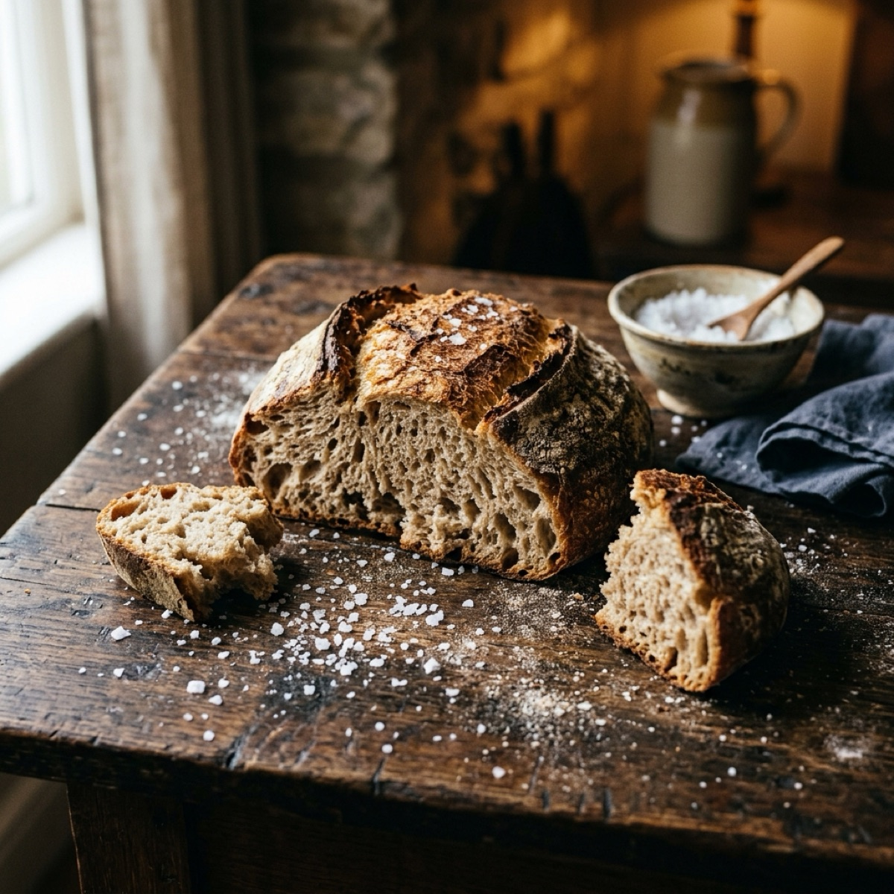

تصوّر بصري
الافتتاح · حرارة القوت
كسرة أولى
على خشب المائدة العتيق، رغيف قمح ساخن قُسم باليدين لا بالسكين. خرج منه خيط بخار رقيق تبدد في هواء الغرفة البارد، وتساقطت ذرات فتات خشنة ملأت شقوق الطاولة. كان في كسر الرغيف صوت ألفة قديمة، يوهم الجالس بأن اقتسام القوت اقتسامٌ للحياة، وأن اليد التي تمتد معك إلى الرغيف ذاته لا يمكن أن تنقبض في وجهك غداً.
التفصيل المادي: رغيف قمح مكسور باليدين، بخار رقيق، وفتات في شقوق الخشب.